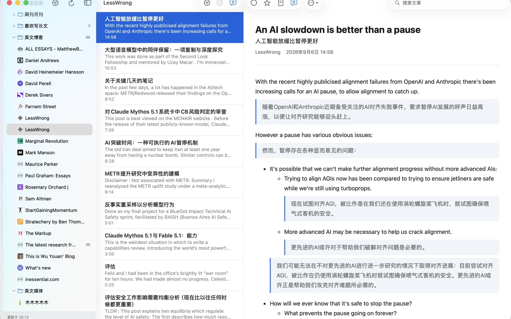

Your corner of the internet.
Bring your favorite RSS and Atom feeds together. Organize subscriptions into categories, and import or export your collection with OPML.
Follow the voices you love. Discover the ones you haven’t met.
Feedglot brings your RSS feeds and article translation into one calm place.
Made for Mac, iPhone & iPad

LESS FRICTION. MORE DISCOVERY.
Great reading starts with choosing your own sources.
Then getting out of the way of the words.
Bring your favorite RSS and Atom feeds together. Organize subscriptions into categories, and import or export your collection with OPML.
Explore article translation with Feedglot Pro. Choose Apple on-device translation or connect a supported AI provider with your own API key.
Keep your reading connected across your Apple devices with optional iCloud sync. Save interesting articles with a star and return when you have a moment.
THOUGHTFULLY PERSONAL
Use Apple’s on-device translation, or bring your own API key for DeepSeek, OpenAI, Google Gemini or Anthropic Claude.
Article content is not sent to our servers. Optional iCloud sync keeps you in control of how your library travels.
Read our privacy policy ↗A quieter home for a wider perspective.
Ask about availability ↗Have a question? Visit Feedglot Support